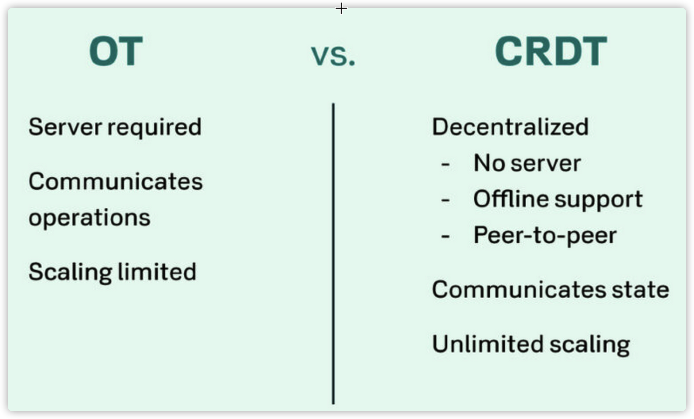
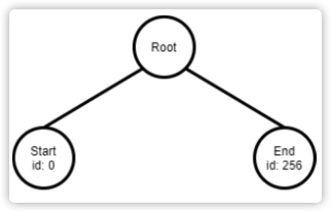
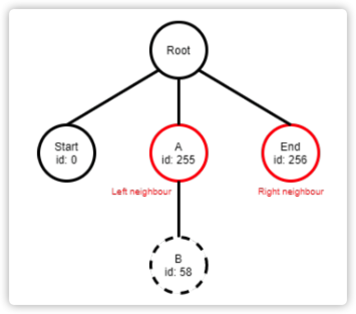

<!DOCTYPE html>
<html lang="" dir="ltr">
  <head>
  <meta charset="utf-8" />
  <meta http-equiv="x-ua-compatible" content="ie=edge">
  <meta name="viewport" content="width=device-width, initial-scale=1, shrink-to-fit=no">
  <title>CRDT协议基础知识(2) - Logoot原理 &middot; CC-Table： 专注协同计算技术研发</title>
  <meta name="description" content="" />
  <link href="https://taodanfang.github.io/css/katex.css" rel="stylesheet">
  
  
  
  
  <link href="https://taodanfang.github.io/css/concated.min.css" rel="stylesheet">
  
  


</head>


  <body > 
    <div style="position: fixed; z-index: 500;
    width: 100vw; background-color: black; color: white;
    box-shadow: 0 0.4rem 2rem 0 rgba(0,0,0,0.2);">
        
<nav class="nav-bar side-padding" style="max-width: 100vw;"
>
  <h1 class="nav-header"><a href="https://taodanfang.github.io" 
    class="nav-text" style="color: wheat;">熙熙表格</a></h1>
 
  <h3 class="nav-header nav-text" 
  >
  <a href="#single-page-head" style="font-size: 18px; color:lightgreen; padding-top: 4px;">  CRDT协议基础知识(2) - Logoot原理</a>

</h3>
  
  <div class="hamburger-menu">
    <button onclick="hamburgerMenuPressed.call(this)" aria-haspopup="true" aria-expanded="false" aria-controls="menu" aria-label="Menu">
      <span  style="background-color: wheat;"></span>
      <span  style="background-color: wheat;"></span>
    </button>
    <ul id="menu" class="hamburger-menu-overlay">
      <li><a href="https://taodanfang.github.io" class="hamburger-menu-overlay-link">Home</a></li>
      
      <li><a href="https://taodanfang.github.io/categories/bleve/" class="hamburger-menu-overlay-link">bleve</a></li>
      
      <li><a href="https://taodanfang.github.io/categories/boltdb/" class="hamburger-menu-overlay-link">boltdb</a></li>
      
      <li><a href="https://taodanfang.github.io/categories/casbin/" class="hamburger-menu-overlay-link">casbin</a></li>
      
      <li><a href="https://taodanfang.github.io/categories/cc-table/" class="hamburger-menu-overlay-link">cc-table</a></li>
      
      <li><a href="https://taodanfang.github.io/categories/channel/" class="hamburger-menu-overlay-link">channel</a></li>
      
      <li><a href="https://taodanfang.github.io/categories/context/" class="hamburger-menu-overlay-link">context</a></li>
      
      <li><a href="https://taodanfang.github.io/categories/crdt/" class="hamburger-menu-overlay-link">CRDT</a></li>
      
      <li><a href="https://taodanfang.github.io/categories/d2admin/" class="hamburger-menu-overlay-link">d2admin</a></li>
      
      <li><a href="https://taodanfang.github.io/categories/deployment/" class="hamburger-menu-overlay-link">deployment</a></li>
      
      <li><a href="https://taodanfang.github.io/categories/distributed-computing/" class="hamburger-menu-overlay-link">distributed computing</a></li>
      
      <li><a href="https://taodanfang.github.io/categories/drag-and-drop/" class="hamburger-menu-overlay-link">drag and drop</a></li>
      
      <li><a href="https://taodanfang.github.io/categories/event/" class="hamburger-menu-overlay-link">event</a></li>
      
      <li><a href="https://taodanfang.github.io/categories/go/" class="hamburger-menu-overlay-link">go</a></li>
      
      <li><a href="https://taodanfang.github.io/categories/golang/" class="hamburger-menu-overlay-link">golang</a></li>
      
      <li><a href="https://taodanfang.github.io/categories/goroutine/" class="hamburger-menu-overlay-link">goroutine</a></li>
      
      <li><a href="https://taodanfang.github.io/categories/iot/" class="hamburger-menu-overlay-link">iot</a></li>
      
      <li><a href="https://taodanfang.github.io/categories/kit/" class="hamburger-menu-overlay-link">kit</a></li>
      
      <li><a href="https://taodanfang.github.io/categories/math/" class="hamburger-menu-overlay-link">math</a></li>
      
      <li><a href="https://taodanfang.github.io/categories/microservice/" class="hamburger-menu-overlay-link">microservice</a></li>
      
      <li><a href="https://taodanfang.github.io/categories/mongodb/" class="hamburger-menu-overlay-link">mongodb</a></li>
      
      <li><a href="https://taodanfang.github.io/categories/nats/" class="hamburger-menu-overlay-link">nats</a></li>
      
      <li><a href="https://taodanfang.github.io/categories/page/" class="hamburger-menu-overlay-link">page</a></li>
      
      <li><a href="https://taodanfang.github.io/categories/practice/" class="hamburger-menu-overlay-link">practice</a></li>
      
      <li><a href="https://taodanfang.github.io/categories/pubsub/" class="hamburger-menu-overlay-link">pubsub</a></li>
      
      <li><a href="https://taodanfang.github.io/categories/rule/" class="hamburger-menu-overlay-link">rule</a></li>
      
      <li><a href="https://taodanfang.github.io/categories/schedule/" class="hamburger-menu-overlay-link">“schedule&#34;</a></li>
      
      <li><a href="https://taodanfang.github.io/categories/search/" class="hamburger-menu-overlay-link">search</a></li>
      
      <li><a href="https://taodanfang.github.io/categories/socket.io/" class="hamburger-menu-overlay-link">socket.io</a></li>
      
      <li><a href="https://taodanfang.github.io/categories/task/" class="hamburger-menu-overlay-link">task</a></li>
      
      <li><a href="https://taodanfang.github.io/categories/tenant/" class="hamburger-menu-overlay-link">tenant</a></li>
      
      <li><a href="https://taodanfang.github.io/categories/tree/" class="hamburger-menu-overlay-link">tree</a></li>
      
      <li><a href="https://taodanfang.github.io/categories/vue/" class="hamburger-menu-overlay-link">vue</a></li>
      
      <li><a href="https://taodanfang.github.io/categories/websocket/" class="hamburger-menu-overlay-link">websocket</a></li>
      
      
    </ul>
  </div>
</nav>


    </div>

    <div class="single-body">
      <main id="single-page-head" class="content side-text-padding" style="margin-top: 108px;">
        <article class="post dropcase">
          <header class="post-header">

            <h1 class="post-title" >CRDT协议基础知识(2) - Logoot原理</h1>
            
            <div class="nav-bar">
              <p class="post-date">
                Posted 
                <time datetime="2021-01-28">Jan 28, 2021</time>
              </p>

              <div>
                <span style="font-size: 14px; padding-top: 0px;;"
                 id="busuanzi_container_site_uv">
                本站访客数
                <span style="padding-left: 4px; padding-right: 4px; color: red;"
                id="busuanzi_value_site_uv"></span> 人次, 
                </span>
                <span style="font-size: 14px; padding-bottom: 10px;;"
                id="busuanzi_container_page_pv">
                    本文总阅读量
                    <span style="padding-left: 4px; padding-right: 4px; color: red;"  
                    id="busuanzi_value_page_pv"></span> 次
                </span>
              </div>
            </div>
            
            

          </header>
          <picture class="post-figure">
            
            
            
            <source srcset="https://taodanfang.github.io/posts/crdt-2-1/img-1_hu6869e2fbd1c45097e86bb3b7805c872b_70971_711x0_resize_q75_lanczos.jpeg 1x, https://taodanfang.github.io/posts/crdt-2-1/img-1_hu6869e2fbd1c45097e86bb3b7805c872b_70971_1422x0_resize_q75_lanczos.jpeg 2x, https://taodanfang.github.io/posts/crdt-2-1/img-1_hu6869e2fbd1c45097e86bb3b7805c872b_70971_2133x0_resize_q75_lanczos.jpeg 3x">
            
          </picture>
          


          

          <div class="next-post"  style="min-width: 250px;" >
            
            <a ontouchstart="cardPressed.call(this)" ontouchend="cardReleased.call(this)" ontouchmove="cardReleased.call(this)" 
  href="https://taodanfang.github.io/posts/crdt-1-1/" class="card blog-card bc-next" rel="bookmark" >

  <article class="card-body">
    <h2 class="card-title">CRDT协议基础知识(1) - 基本实现框架</h2>
    <p class="card-text">背景 2016年3月，Google上线的Google Docs，协同文档的诞生，无疑给基于互联网的沟通协作带来了一场革命。
1984 年，MIT 的科学家提出了计算机支持的协同工作（Computer Supported Cooperative Work，缩写为 CSCW），使得人们可以借助计算机和互联网去完成协同工作。
</p>
    <div class="card-subtext muted-text">
      <p>Posted <time datetime="2021-01-27 127:00">Jan 27, 2021</time></p>
      <p>#CRDT </p>
    </div>
  </article>
</a>
            
          </div>

          <p>尝试将CRDT应用于基于块(block)的协同文档(xml)编辑场景，提供了一个详细的原型系统实现参考，原型系统基于Logoot项目扩展，提供了block操作。系统的客户端是Fonto，一款支持XML编辑的工具软件。</p>
<h2 id="introduction">Introduction</h2>
<p>CRDT 于2011年首次正式提出，最初用于实现协同文本编辑和移动计算。</p>
<h2 id="研究报告">研究报告</h2>
<h3 id="what-does-conflict-free-mean"><strong>What does conflict-free mean?</strong></h3>
<p>”无冲突“意味着，系统可以自动检测并发更新，并自动做出确定性的冲突解决方案，基于所采用的数据结构中的元数据，总能保证全局状态一致。</p>
<p>一个正确的协同CRDT系统，应当满足如下标准：</p>
<ul>
<li>Causality（因果有序）: All operations are ordered by a precedence relation</li>
<li>Convergence（最终一致）: The system converges if all replicas are identical when the system is idle.</li>
<li>Intention（意图反映）: The expected effect of an operation should be observed on all replicas.</li>
</ul>
<p>CRDT的核心数据结构包括：set，register，counter。基于这些基本的数据类型，可以构造出更多复杂的数据类型，例如：tree，map，graph等等</p>
<h3 id="what-does-replication-mean"><strong>What does replication mean?</strong></h3>
<p>副本处理机制，大体可以分为以下几类：</p>
<ul>
<li>
<p>悲观副本机制：各个副本的内容完全一致，系统需要确保副本内容是最新的</p>
</li>
<li>
<p>乐观副本机制：客户可以读写同一副本的不同版本，系统需要重点考虑此类副本</p>
</li>
<li>
<p>活跃（同步）副本机制：原始副本责任者，需要负责实现与其他副本的同步</p>
</li>
<li>
<p>被动（异步）副本机制：副本需要获得全部更新</p>
</li>
<li>
<p>面向操作的副本机制 vs 面向状态的副本机制：根据通信开销和空间开销，进行选择合适的”副本机制“</p>
</li>
</ul>
<h3 id="ot-vs-crdt"><strong>OT vs. CRDT</strong></h3>
<p>当前 OT 主要应用于协同编辑，OT的优势是可以确保最终一致性，并且用户体验较好，适用于轻量级客户端。缺点包括：1）OT的转移函数非常复杂，而且容易造成空间爆炸；2）OT 需要采用中心服务器架构，容易导致单点故障和数据泄露风险；3）可扩展性较差，不适合于云计算环境、P2P环境和动态群组环境。4) OT 要求客户端与服务器保持常连接在线状态。</p>
<p>CRDT是一种新型的副本一致保证机制，克服了OT的一些不足，如：1）可扩展性较好，不要求采用中心服务器架构，更易于适应大规模用户和P2P环境；2）不要求客户端保持连接状态；3）算法复杂度和开销较低，改进空间较大；其缺点包括：1）支持的数据类型较少；2）支持的操作类型较少（主要是delete, insert）；3）用户体检较OT差一些。</p>
<p></p>
<h3 id="面向操作的commutative-crdt">面向操作的Commutative-CRDT</h3>
<p>基本思想：仅仅发送客户对副本的操作序列，其他客户依据其本地操作和收到广播操作，更新本地副本的状态</p>
<p>关键问题是，对操作序列的排序（全序），可以基于时间戳进行，可以采用的方法有：逻辑时钟，NTP物理时钟，真实时间（GPS），以及混合逻辑时钟</p>
<p>主要不足是：1）每个操作仅仅被发送一次，邀请每个消息都必须被客户收到；2）在同时收到多个操作的情况下，对于解决冲突造成很大困难</p>
<p>主要优点是：空间开销较小，易于进行历史追踪</p>
<h3 id="面向状态的convergent-crdt">面向状态的Convergent-CRDT</h3>
<p>基本思想：所有副本互相发送自己的状态给其他副本</p>
<p>主要问题是，需要进行状态合并操作</p>
<blockquote>
<p>The merge method must conform to three properties: commutativity, associativity, and idempotency. The properties commutativity and associativity essentially points out that the order of the merge operations does not matter, since a state can be achieved through multiple different ways. The property idempotency states that it is not needed to care about potential duplicates.</p>
</blockquote>
<p>为了跟踪副本对象的状态，需要采用向量时钟，导致空间开销较大。由于需要发送向量时钟，通信开销较大。这些问题，需要参考《分布式计算算法》进行解决。</p>
<h3 id="cmcrdt-与-cvcrdt-的选择">cmCRDT 与 cvCRDT 的选择</h3>
<p>选择依据，主要是应用场景和特性要求。</p>
<p>cmCRDT：通信开销小，可以进行历史回放，但要求网络环境较高</p>
<p>cvCRDT：通信开销、空间开销较大，归并算法实现难度较大，但对网络环境要求较低</p>
<h3 id="crdt算法与系统">CRDT算法与系统</h3>
<table>
<thead>
<tr>
<th>算法</th>
<th>要点</th>
<th>场景</th>
</tr>
</thead>
<tbody>
<tr>
<td>Tree-based CRDT</td>
<td>Every element is a node. There are one or more root nodes and every node has zero or more children. When using trees, operations may not only have effect on the element itself, but also on the children of the element</td>
<td></td>
</tr>
<tr>
<td>Set-based CRDT</td>
<td>Set consists of elements at least contain a unique ID. This ID might be a tag or position ID.</td>
<td></td>
</tr>
<tr>
<td>G-counter</td>
<td>A counter is a replicated integer supporting operations such as increment, decrement and value to query it. The G-counter, also known as the state-based increment-only counter, does not make use of the decrement operation.</td>
<td>be useful for peer to peer applications which counts certain attributes, such as likes（投票）</td>
</tr>
<tr>
<td>PN-Counter</td>
<td>A commutative CRDT which is practically the same as the G-Counter, but with an additional feature to decrement the counter.</td>
<td>be used in applications such as Skype for counting the numbers of logged in users.（在线人数）</td>
</tr>
<tr>
<td>Non-Negative-Counter</td>
<td>A non-negative counter is a counter that can only be positive</td>
<td>be used to count the remaining credits of an avatar</td>
</tr>
<tr>
<td>Growth Only Set</td>
<td>A CRDT where only elements can be added</td>
<td></td>
</tr>
<tr>
<td>2P-Set</td>
<td>A 2P-Set CRDT is a CRDT with the same functionality as a G-set CRDT, but with the remove functionality added</td>
<td></td>
</tr>
<tr>
<td>U-Set</td>
<td>The simplified version of 2P-set under two assumptions. If elements are unique, a removed element will never be added again.</td>
<td></td>
</tr>
<tr>
<td>Last-Writer-Wins-Element-Set (LWW)</td>
<td>Based on timestamps. All operations and elements in the CRDT get a timestamp assigned and all operations will be executed in the order of the timestamps</td>
<td></td>
</tr>
<tr>
<td>Observed Remove Set</td>
<td>Each element will get a unique tag. This tag is now used to add or remove elements and since each tag is unique, no conflicts should occur. However, one constraint is that operations should be executed in a causal order at every CRDT.</td>
<td></td>
</tr>
<tr>
<td>PN-Set</td>
<td></td>
<td>is used for collaborative editing sets</td>
</tr>
<tr>
<td>Sequence CRDTs</td>
<td>Sequence CRDTs are sequences, lists or ordered sets CRDTs. Sequence CRDTs have a lot of different implementations such as treedoc, RGA, WOOT, Logoot, LSEQ and many more.</td>
<td>These CRDTs can be used to build a collaborative text-editor.（协同编辑）</td>
</tr>
</tbody>
</table>
<p>以上算法的<strong>共同思想</strong>：</p>
<p>每个元素获得一个唯一的位置坐标（文档中），并保存在某处。增加一个元素时，会分配一个唯一的坐标，并被加入到保存坐标信息的数据结构中。删除一个对象时，或者删除一个对应的数据结构，或者删除一个坐标信息（标记为删除）。</p>
<h2 id="logoot-原理">Logoot 原理</h2>
<h3 id="数据结构">数据结构</h3>
<ul>
<li>Logoot 基于树结构来实现</li>
<li>初始化一个logoot实例会创建一棵文档树，包含一个root节点，和两个子节点(start, end)，分别代表文档的开始和结束</li>
</ul>
<p></p>
<ul>
<li>每个结点都分配了一个标识，由三部分组成：
<ul>
<li>ID，整型数值，用于标识结点位置信息</li>
<li>site，字符串，用于标识客户</li>
<li>clock，整型数值，代表操作的数量</li>
</ul>
</li>
<li>基于结点的标识，可以确定该结点在文档树中的位置。</li>
</ul>
<h3 id="基本操作">基本操作</h3>
<p>每个操作(operation)都需要一个参数：index，便于定位操作结点</p>
<blockquote>
<p>插入：Every insert operation must have an index, such that the CRDT knows where to insert the value. Based on the index (depth-first search), a position is generated using the identifiers of the neighbour nodes. The neighbour nodes are the current node at the given index and the node at the given 𝑖𝑛𝑑𝑒𝑥 + 1. The index will firstly be checked whether it is out of bounds. When this is the case, the index of the last node will be used, such that the insertion will be performed at the end of the block. Once the two neighbour nodes have been found, the CRDT will generate a random integer for the Id, which is between the two Ids of the neighbour nodes. Cases can occur when there exists no integer between the two Ids of the neighbour nodes. In these cases, the node would be inserted into the tree as a child of the left neighbour node and would have a randomised Id. When a node is inserted in the CRDT from one client, it emits a message containing the path (sequence of identifiers) and the content of the node. In the case of figure, the users emits the path [255, 58] (simplified to only Ids) to the other CRDTs in the network. The receiving client receives this message and builds on the exact same location a node with the same content, if there exists no node on that path. When the exact same location already contains a node, where the identifiers are exactly the same, the insert operation will be aborted. Since the clock is the operation count, an operation can only be aborted if that operation is already executed. This means that the Id, site and clock are exactly the same as the incoming operation.</p>
</blockquote>
<p></p>
<blockquote>
<p>删除：Similar to the insert operation, the delete operation must have an index. The index will lead to a node in depth-first manner, which should be removed from the tree. However, when this node contains child nodes, the node is set to empty with an ’empty’ attribute set to true and this node will now basically function as a tombstone. When the node does not have children, it can directly be deleted from the tree. The CRDT will recursively go over the parent nodes of this node to check if the parent can be deleted from the tree as well. If removing the node from the tree results in a tombstone parent node not having any children anymore, this parent node will also be removed from the tree. Just like the insert operation, a message is sent containing the path of the deleted node, such that the receiving client can delete the exact same node from the tree.</p>
</blockquote>
<p>每个广播消息，都需要一个参数：path（结点路径）</p>
<blockquote>
<p>消息：As noticed, both the insert and the delete operations will send messages to other CRDTs with their respective path of the inserted or deleted node. This means that all the CRDTs will contain the exact same tree structure with the same content since all nodes will be inserted or deleted on the same path. Because all CRDTs contain the same tree structure, convergence is guaranteed.</p>
</blockquote>
<h2 id="参考文献">参考文献</h2>
<blockquote>
<ul>
<li>
<p>CRDTs for Fonto，Bachelor thesis at the Delft University of Technology，2020.7.1</p>
</li>
<li>
<p><a href="https://github.com/t-mullen/logoot-crdt">https://github.com/t-mullen/logoot-crdt</a></p>
</li>
</ul>
</blockquote>
        </article>
        

      </main>

      <nav class="end-nav">
        
        <a ontouchstart="cardPressed.call(this)" ontouchend="cardReleased.call(this)" ontouchmove="cardReleased.call(this)" 
  href="https://taodanfang.github.io/posts/crdt-1-1/" class="card blog-card" rel="bookmark" >
  
  <div class="card-img-container">
    <p class="card-img-overlay">下一篇</p>
    <picture>
      
      
      
      <source srcset="https://taodanfang.github.io/posts/crdt-1-1/img-1_hu64d27b9e7b9cf8744283a042b04ee8fe_233303_400x0_resize_q75_lanczos.jpeg 1x, https://taodanfang.github.io/posts/crdt-1-1/img-1_hu64d27b9e7b9cf8744283a042b04ee8fe_233303_800x0_resize_q75_lanczos.jpeg 2x, https://taodanfang.github.io/posts/crdt-1-1/img-1_hu64d27b9e7b9cf8744283a042b04ee8fe_233303_1200x0_resize_q75_lanczos.jpeg 3x">
      
    </picture>
  </div>
  
  <article class="card-body">
    <h2 class="card-title">CRDT协议基础知识(1) - 基本实现框架</h2>
    <p class="card-text">背景 2016年3月，Google上线的Google Docs，协同文档的诞生，无疑给基于互联网的沟通协作带来了一场革命。
1984 年，MIT 的科学家提出了计算机支持的协同工作（Computer Supported Cooperative Work，缩写为 CSCW），使得人们可以借助计算机和互联网去完成协同工作。
</p>
    <div class="card-subtext muted-text">
      <p>Posted <time datetime="2021-01-27 127:00">Jan 27, 2021</time></p>
      <p>#CRDT </p>
    </div>
  </article>
</a>
        
      </nav>

      
        <script src="https://utteranc.es/client.js"
        repo="taodanfang/hugoblogtalks"
        issue-term="title"
        theme="github-light"
        crossorigin="anonymous"
        async>
        </script>
      

  </div>

  <footer>
    <script async src="//busuanzi.ibruce.info/busuanzi/2.3/busuanzi.pure.mini.js"></script>

</footer>
  
  <script defer src="https://taodanfang.github.io/js/katex.js"></script>


  <script defer src="https://taodanfang.github.io/js/auto-render.js" onload="renderMathInElement(document.body);"></script>


<script src="https://taodanfang.github.io/js/core.min.js"></script>


  <script src="https://cdn.jsdelivr.net/npm/jquery@3.4.1/dist/jquery.min.js"></script>

  <script>
    $('#TableOfContents a').click(function () {
      console.log("click");
    var target = $(this).attr('href');
    console.log(target);
    $('html, body').animate({
       scrollTop: $(target).offset().top - 108 
     }, 500);
     return false;
    });
    $('body > div:nth-child(1) > nav > h3 > a').click(function () {
      console.log("click");
    var target = $(this).attr('href');
    console.log(target);
    $('html, body').animate({
       scrollTop: $(target).offset().top - 108 
     }, 500);
     return false;
    });
  </script>
  </body>
</html>
